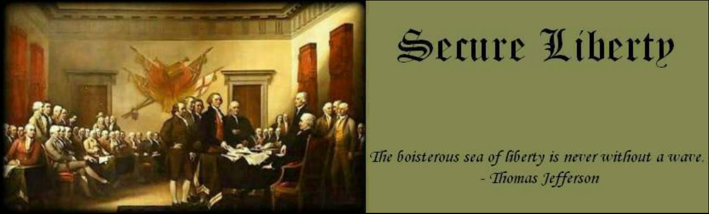

Secure Liberty
"liberty conservative freedom republican libertarian blog constitiution federalist Bush politics election polls"
Secure Liberty Right Here !!!
Warrantless Intercepts
I'm somewhat troubled by the conclusions that some people are drawing with respect to the current political firestorm surrounding the NSA communictaion intercepts. Some in Congress naturally see it as a violation of their statute, while others could see the statute itself as an infringement upon the Article II powers of the President. I'll present some hypotheticals that I think will lead to some more logical conclusions in this area.
Hypo #1: You are a 21 year old male, attending a college. You meet an have started dating a girl attending the same school, let's call her Meadow Soprano. She is the daugher of a high ranking member of organized crime. You place calls to her home and cell phone. The FBI has a proper warrant authorizng them to wiretap the phones, including cell phones, of all members of the household. Your conversations are thus recorded by the FBI. The FBI does not suspect you, nor does it have a warrant to record your phone calls. Has the FBI done anything wrong? Have your rights been violated?
Hypo #2: The CIA and NSA have discovered the code for a cell phone owned by an al Qaeda leader who operates out of Syria. They can now intercept and record all his calls. In the interest of national security they intercept and record several phone calls made to individuals in Iraq, Saudi Arabia and Iran. They have no warrant to do this. Has the NSA done anything wrong? Have any U.S. laws been broken? Can the President authorize this conduct?
Hypo #3: The man in Hypo #2 also calls a man who lives in Newark, NJ on several occasions. The NSA intercepts these calls and records them, as it did the calls to individuals outside the U.S. The NSA does not obtain a warrant. Has the NSA done anything wrong? Have they vioated the New Jersey man's rights under the fourth amendment?
ANSWERS:
Hypo #1. Your rights have not been violated. The warrant authorizes the recording and the FBI has done nothing wrong.
Hypo #2. The President clearly has this authority and no member of Congress would dispute that he does. The NSA has done nothing wrong and no laws have been broken.
Hypo #3. As we see in Hypo #2, the authorization of the intercepts, for national security purposes, is a valid exercise of Presidential power. As we saw in Hypo #1, it is irrelevant who the al Qaeda leader calls and who is on the other end of the line if the authorization is valid with respect to one party to the conversation.
HOWEVER, Congress makes the criminal laws and can shape the rules of evidence. It has done so. Therefore, unless the NSA obtains a warrant, as authoized by Congress, it cannot use the information obtained in Hypo #3 to prosecute the man from New Jersey.
So let's apply this to the present situation. The executive branch has requested thousands of warrants under FISA and yet it has failed to do so in other instances. The executive branch, which is charged with enforcement and prosecution of the laws, probably did not bother to obtain warrants in those instances where: (1) the U.S. individual was not likely to be charged or face prosecution or (2) where the information obtained was not likely to be useful in any criminal proceeding. This is common sense. To the extent that FISA attempts to limit the ability of the President to gather intelligence on foreign persons or nations, as in Hypo #2, it is Unconstitutional. Congress has no such authority. Congress can proscribe rules related to the use of information gathered in Hypo #3 in criminal cases, and has done so. Those provisions are Constitutional.
UPDATE: If you like, you can see what Al Gore has to say on this subject by watching his speech live on CSPAN.
Been a long time....
...since I've blogged anything. Despite encouragement from some (which is appreciated), and flurries of activity, the real world continues to demand all of my time. I even missed some great stories in the last month or so, stories I would have loved to write about. I know several other bloggers have gone through this, Allah and LaShawn Barber to name two. Some bloggers have turned their blogs into caeers, with radio and tv appearances, syndicated columns and so on. But for the rest of you I ask, how do you do it? What kind of jobs do you have? I'm rather sure that blogging during work would lead to my termination.
Cleaning House At The House
Of course, the Senate needs is every bit as much...but we'll get to that later. The Truth Laid Bear is putting forth a call for center-right bloggers to clean up the leadership of the house. I'll admit that Abramoff taint is no worse in my view that the vast sums spent on local pork for their constituents. Fixing one without the other won't accomplish much, but I support the effort. Perhaps some fiscal propriety will carry over to spending bills. Here's the TTLB appeal, to which I'm happy to add the Secure Liberty voice.
We are bloggers with boatloads of opinions, and none of us come close to agreeing with any other one of us all of the time. But we do agree on this: The new leadership in the House of Representatives needs to be thoroughly and transparently free of the taint of the Jack Abramoff scandals, and beyond that, of undue influence of K Street.
We are not naive about lobbying, and we know it can and has in fact advanced crucial issues and has often served to inform rather than simply influence Members.
But we are certain that the public is disgusted with excess and with privilege. We hope the Hastert-Dreier effort leads to sweeping reforms including the end of subsidized travel and other obvious influence operations. Just as importantly, we call for major changes to increase openness, transparency and accountability in Congressional operations and in the appropriations process.
As for the Republican leadership elections, we hope to see more candidates who will support these goals, and we therefore welcome the entry of Congressman John Shadegg to the race for Majority Leader. We hope every Congressman who is committed to ethical and transparent conduct supports a reform agenda and a reform candidate. And we hope all would-be members of the leadership make themselves available to new media to answer questions now and on a regular basis in the future.
FISA and Article II
In response to many comments related to FISA and the President's authority related to warrantless electronic surveillance, I would like to direct you all to this excellent piece by John Hinderaker at Powerline. John sumarizes the current state of the law nicely.
The federal appellate courts have unanimously held that the President has the inherent constitutional authority to order warrantless searches for purposes of gathering foreign intelligence information, which includes information about terrorist threats. Furthermore, since this power is derived from Article II of the Constitution, the FISA Review Court has specifically recognized that it cannot be taken away or limited by Congressional action.
That being the case, the NSA intercept program, which consists of warrantless electronic intercepts for purposes of foreign intelligence gathering, is legal.
It’s worth noting that all of the cases cited above involved warrantless searches inside the United States. The NSA program, in contrast, involves international communications only, and the intercepts take place at least in part, and perhaps wholly, outside the United States. Thus, the NSA case is even clearer than the cases that have already upheld Presidential power.
This is just a summary, but he provides the case citations to back it up. What I think many people are confusing here, is the relationship between warrantless searches and evidence standards in criminal proceedings. If you stop to think about it, what is your remedy for a warrantless search by the police or FBI? It is simply that information obtained by way of such a search is inadmissable against you (including evidence received only because of such tainted evidence).
So hypothetically, if you are a U.S. citizen, conversing with someone overseas, and that conversation is intercepted, and no warrant (including a FISA warrant) was obtained, the evidence can't be used against you in criminal proceedings. That's it. The use of such information for national security purposes is, and has always been, constitutional. President Bush is not doing anything new here, although technology has allowed more widespread application of such surveillance, often triggered by data mining engines.
Now, that being said, do we like the fact that our international phone conversations may be overheard and monitored? No, most of us probably don't. It seems a violation of privacy. On that point however, I return to my original comment on this topic; can you have a realistic expectation of privacy in any international phone call? Certainly foreign governments may be intercepting those communications. E-mail is another story, NOBODY with a brain believes that e-mail communications are private, and reasonably expects that they won't be intercepted. The electronic communication age brings many great things, and has some potentially unfortunate consequences as well. All Americans are free to return to the past by simply not using these new technologies.
LINE Certified Coach and ธิติพล เทียมจันทร์ and LINE Certified Coach 2020 and Thailand Marketing Guru
A Secular Inquisition
It's a great turn of phrase, which I borrowed from Captain Ed, and which perfectly describes the Democrats' approach to the Alito hearings.
Michelle Malkin has given up on watching the Democrats beat a dead horse. I don't think that's even right, they're swinging and missing at a dead horse. No three strike rule here; they haven't yet left the batter's box as they flail away in vain at imaginary pinatas. I'm not sure the Democrat Senators could have looked more incompetent if they'd tried.
It's so far gone that their liberal allies at the AP have tried to suggest that it was Republican Senator Lindsey Graham who made Sam Alito's wife cry. (H/T Ace) Sure, it was the decent, sincere apology he offered for the boorish behavior of his colleagues that did it. Well she sould take some comfort in the fact that her husband will be the next Supreme Court Justice of the United States of America. These hearings will be quickly forgotten, and the name of Justice Sam Alito will be in the record books for all time.
UPDATE: The news reports seem unanimous that the Democrats will not filibuster Judge Alito, thereby assuring his confirmation. (H/T Blogs for Bush)
Democrats on the Senate Judiciary Committee made a final stab at challenging Alito on presidential powers, the death penalty and other matters. But their efforts sometimes seemed halfhearted, and even the most liberal advocacy groups acknowledged privately that they saw slim hopes of preventing his confirmation later this month in the full Senate, where Republicans hold 55 of the 100 seats.
I'd bet that he gets something just shy of 60 votes. The reality, as many have mentioned, is that most Democrat Senators will no longer support any Supreme Court nominee who isn't, in fact, quite a bit left of center. Alito should move the court towards the center. Justice Kennedy will probably become the most common swing vote. I'd go so far to suggest that with Alito on the court, it's probably a dead on center/moderate as it has been in my lifetime.
The truly scary prospect for Democrats comes in the form of Justice Stevens. Should he leave the bench with a Republican President in office, the court will likely shift to the right of center. Liberals will be as aghast as conservatives have been for the last 40 years or more. Expect a HUGE focus on this in the next Presidential election.
UPDATE: Even Diane Feinstein is conceding that a filibuster is unlikely and unwarranted (H/T Ace), and the Washington Post editors agree (H/T Captain Ed). Blogs for Bush has more, as does Captain Ed. I'm very pleased by the mature response by the Post. They essentially said that while Alito will make the court more conservative than they'd like, he's obviously not a blind idealogue (like Ruth Bader Ginsberg) and should be confirmed. Alexandra at All Things Beautiful manages to capture Ted Kennedy's reaction to the WaPost editorial. Outside the Beltway has found the unassaible liberal media outlet, the Boston Globe, which says Alito is not fit for the court.
The Hypocrisy Volume
...is set on LOUD. (H/T Kevin at Wizbang, via Stop the ACLU)
NEW YORK — The American Civil Liberties Union announced today that it will oppose the nomination of Judge Samuel A. Alito, Jr. to replace Justice Sandra Day O’Connor on the United States Supreme Court.
“At a time when our president has claimed unprecedented authority to spy on Americans and jail terrorism suspects indefinitely, America needs a Supreme Court justice who will uphold our precious civil liberties,” said ACLU Executive Director Anthony D. Romero. “Unfortunately, Judge Alito’s record shows a willingness to support government actions that abridge individual freedoms.”
Throughout his career, Judge Alito has promoted an expansive view of executive authority and a limited view of the judicial role in curbing abuses of that authority. Two years ago, Justice O’Connor eloquently expressed what is at stake in these critical times when she wrote: “A state of war is not a blank check for the president when it comes to the rights of the nation’s citizens.”
A state of war is indeed NOT a blank check for the President when it comes to the rights of the nation's citizens. Note the end of that sentence....the nation's citizens. Not enemy combatants. Not terrorists. They have NO rights under our Constitution.
So the hypocrites at the ACLU contradict themselves in their own press release. Senator Lindsey Graham hot on that point in questioning Judge Alito yesterday.
"Can you show me in a case in American jurisprudence where an enemy prisoner held by our military was allowed to bring a lawsuit against our own military regarding their detention?" Graham asked.
"I am not aware of such a case," Alito said.
But wait, there's more hypocrisy. "...America needs a Supreme Court justice who will uphold our precious civil liberties" and "Unfortunately, Judge Alito’s record shows a willingness to support government actions that abridge individual freedoms". Which individual freedoms are those? The right to keep and bear arms? The ACLU hasn't been very friendly to that one, despite it's clarity, in simple English, right there in the second amendment. The first amendment right to freely exercise their religion? The ACLU isn't fond of that one either, certainly not if it happens in public or on public land. Except of course expressions of non-Christian religions, those are fine with them. How about the first amendment right of freedom of the press...since expanded to include "expression"? The ACLU has curiously failed to defend students who wore pro-life shirts to school, or who made pro-second amendment remarks. The ACLU is nowhere to be found when the liberties at stake are those that they actively oppose or choose to ignore or when the people exercising rights they do believe in (freedom of expression) are expressing conservative ideas.
TOsama Dead?
Sure would be nice if we could get some confirmation of this story. (H/T Captain Ed) Kathryn Jean Lopez at NRO says that Osama bin laden died of Kidney failure and was buried in Iran.
And, according to Iranians I trust, Osama bin Laden finally departed this world in mid-December. The al Qaeda leader died of kidney failure and was buried in Iran, where he had spent most of his time since the destruction of al Qaeda in Afghanistan. The Iranians who reported this note that this year's message in conjunction with the Muslim Haj came from his number two, Ayman al-Zawahiri, for the first time.
What sources, I wonder, does Ladeen have that, say, the CIA doesn't have? Personally I'm not impressed by the unidentified sources. However, a fair amount of circumstantial evidence exists that bin Laden is dead. Evidence, though, is not proof. Until we have a body I will assume otherwise and if bin Laden is still alive...
I think we've got to. Dr. Rusty also suggests we look someplace else. I agree that he's probably not in Afghanistan or Pakistan...if he's not dead that is.
ที่ปรึกษาการตลาดออนไลน์ อันดับ 1 and ที่ปรึกษาการตลาดออนไลน์ and วิทยากรการตลาดออนไลน์ and วิทยากร การตลาดออนไลน์